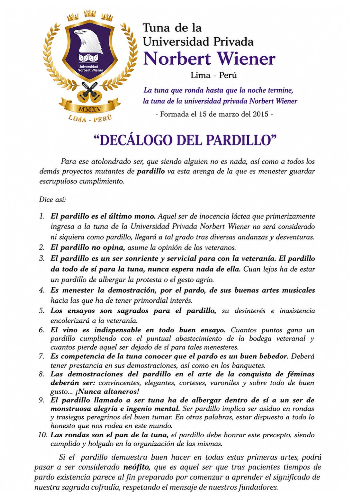

Gestor del Cancionero & Biblioteca de Acordes (Área Privada)
Diseña canciones, configura columnas, añade reseñas históricas y crea tu biblioteca masiva de acordes interactivos en SVG sin usar imágenes.
Vista Previa en Tiempo Real
🎸 Creador Masivo de Biblioteca de Acordes
Diseña tus acordes visualmente con el diapasón interactivo, ajusta el traste de inicio y genera todo el diccionario en un solo código JavaScript descargable.
Haz clic sobre las intersecciones para poner los dedos:
📚 Acordes guardados en esta sesión (0):
¡la tuna que ronda hasta que la noche termine!
Bienvenido al portal oficial de aprendizaje, tradición y archivo musical de la Tuna de la Universidad privada Norbert Wiener.
Cancionero
Aprende las letras y los acordes oficiales de nuestro repertorio.
Decálogo
Conoce e imprime el decálogo de la hermandad.
Real Orden de Ascenso
conoce un poco de nuestros tunos.
Minijuegos
Pon a prueba tus conocimientos sobre la Tuna jugando.
Cancionero & Transcripciones
Busca cualquier canción y despliega los acordes para guitarra, laúd o bandurria.
Decálogo de la Tuna
Visualiza el documento oficial o descárgalo en alta resolución.


Real Orden de Ascenso (ROA)
Jerarquía e historial de los Tunos de Beca de nuestra hermandad.
Minijuegos Tradicionales
¿Qué tanto sabes de la Tuna? Ponte a prueba.